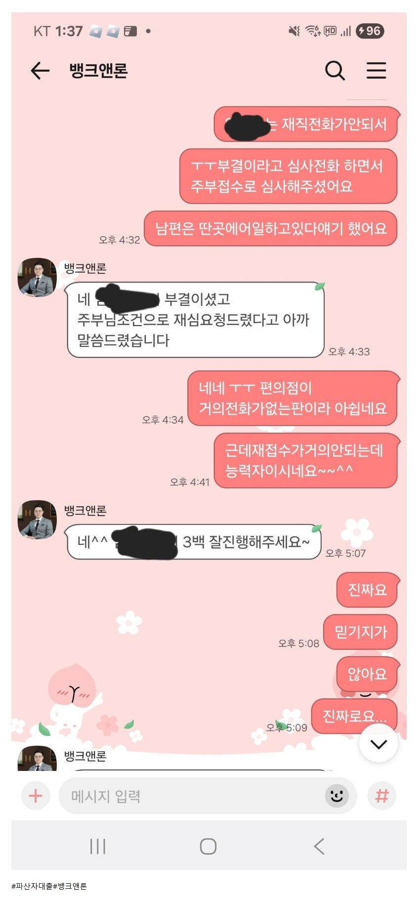

[파산자대출 ] 부결후 되살려준 파산면책자대출후기 / 김용혁이사님,이현섭과장님 고생하셨어요!!!
급히 돈이필요해서 김용혁이사님께 대출상담 요청했어요. 근데가 너무급해서 일주일전에 다른중개
업체통해서 부결받았어요.
그전에도 문의를 드렸는데 지금 저의상황에 대해
자세히알려주셨거든요. 솔직히 그때상황에 대부업대출이 밀려 있다가이자납부 하고 최소32일정도 지나야한다길래 진짜 될까??했었거든요
다른중개 업체 부결되고 나서 돈이 급히 필요해서김용혁 이사님께 다시한번 상담드렸습니다. 제가 일다닌지는 오래됫지만 4대보험도 단기고 재직전화없어서 대출이 과연될까 싶었는데 대부업3군데 접수해주셨고
결국엔 재직전화때문에 부결이 되었지만 김용혁 이사님께서 부결받은 대부업체에 직장인 말고 주부조건으로 재심사요청 하셨다는말에 제가알기론
재심자는3개월뒤나 가능한걸로 알고있었는데
바로주부대출로 심사전화오고 300만원 가능하대서
입금까지 받았습니다. 급한불껐습니다.
진짜 상담받을때 제조건이
힘든조건이여서 ㅜㅜ안되는줄 알았는데 김용혁 이사님과
이현섭 과장님께서 신경 써주셔서 정말감사드립니다!!
뱅크앤론은 힘든상황에서도 대출 받게해주셔서
정말정말 감사합니다. !!!

https://cafe.naver.com/cityman88/309932